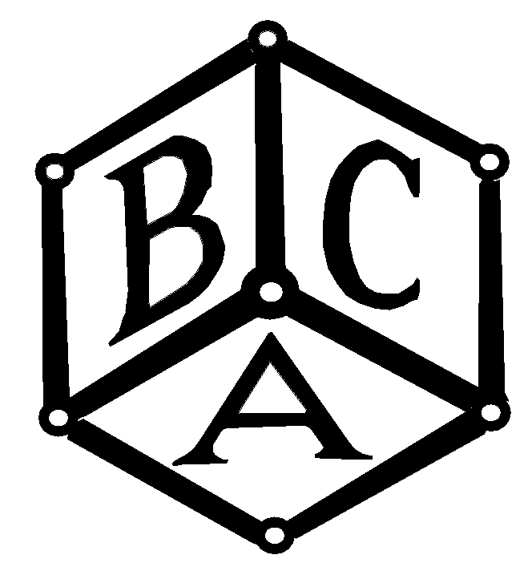

British Crystallographic Association
Spring meeting, Leeds 1997
Information last updated March 10th 1997
Date and Location
- The meeting will be held on 14-17 April 1997 at the University
of Leeds. As in previous years, all of Monday morning will be given
over to registration, the first session commencing after lunch. The conference
will end at lunchtime on Thursday 17 April. Participants will be accomodated
on-campus at Charles
Morris, Ellerslie and Lyddon
Halls of Residence all of which are within close walking distance of the
conference facilities.
Conference facilities
The Commercial Exhibition
- The commercial exhibition will be sited with the posters in the University
sports hall. This is situated centrally between the Conference Auditorium
and the Roger Stevens Lecture theatre block. The sports hall, which offers
12,430 ft2 of space, will be fully equiped with single and three-phase
electrical supplies and internet connections can be provided on demand.
Coffee and lunches will be served there, a cash bar will be available and
there will be two extended poster sessions. The sports hall will be the
centre point of the whole conference and delegates will be encouraged to
attend exhibitors stands throughout. Full details of the commercial exhibition
can be obtained from Prof P. Barnes (E-mail Barnes@gordon.cryst.bbk.ac.uk)
or from the local organisers.
Registration and cost
-
Although the official registration deadline (7th March 1997) has now passed, it is
still possible to register for the conference. The registration fee, which includes
a surcharge, is £120. The cost of the whole conference including
accommodation, meals and the social events is still only £253.50 (£35
less if you are a student, retired or unemployed). Full details of all costings are
given on the registration form.
-
- Registration for the conference is by post only. If you need a registration
form click here. For a set of instructions
to help fill in the registration form click here.
Please send completed registration forms to The Conference Office, University
of Leeds, Leeds LS2 9JT (fax: 0113 2336107). Note that registration
forms received after 7th March will be charged an extra £45.
Conference programme
Workshops / demonstrations
Posters
Local Organising Committee
Enquiries
- Any requests for further information or any comments regarding this
Web page should be sent to:
- Dr M. Thornton-Pett
- School of Chemistry
- University of Leeds
- Leeds LS2 9JT
- Tel: +44 (0)113 2336423
- Fax: +44 (0)113 2336565
- Email: marktp@chem.leeds.ac.uk.